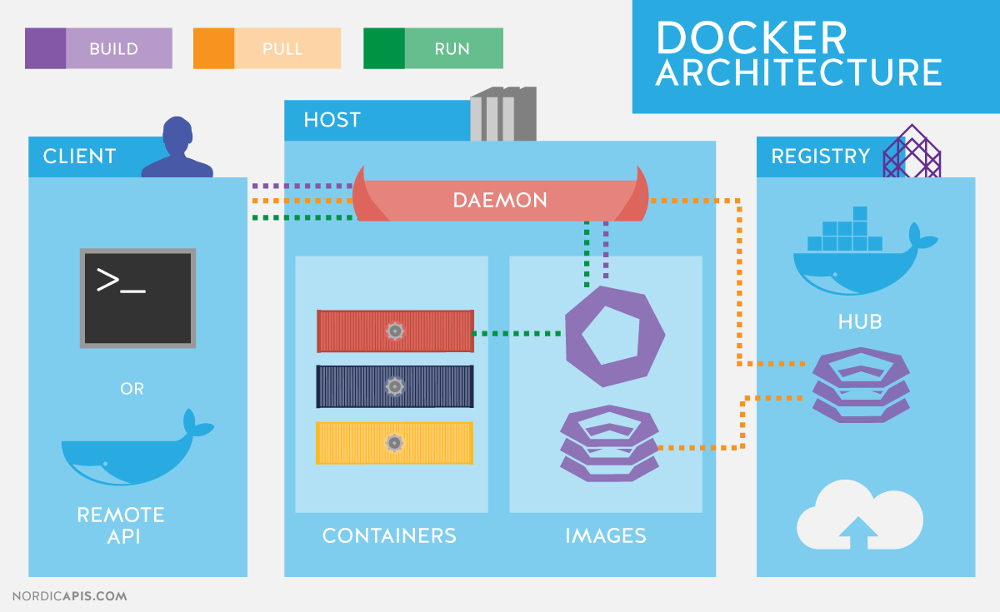
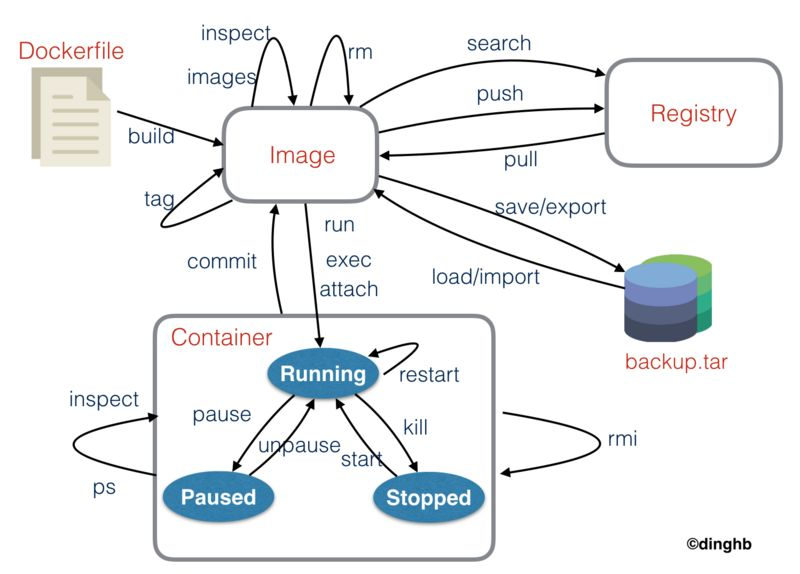
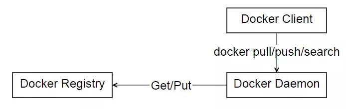
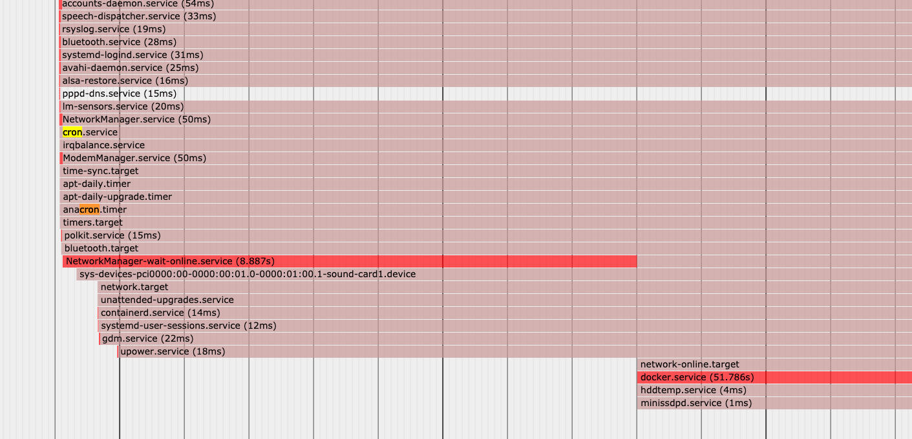

我们日常使用容器技术，主要且常用的操作就是涉及使用容器、操作镜像、访问仓库，需要融会贯通。本文主要参考《Docker — 从入门到实践》一书进行总结而来。


1. 使用镜像
在
Ubuntu/Debian上有UnionFS可以使用，如aufs或者overlay2，而CentOS和RHEL的内核中没有相关驱动。因此对于这类系统，一般使用devicemapper驱动利用LVM的一些机制来模拟分层存储。这样的做法除了性能比较差外，稳定性一般也不好，而且配置相对复杂。
- [1] 获取镜像 - pull
# 获取镜像的格式
# 仓库地址: 格式为域名或IP地址，默认为官方仓库地址
# 仓库名称: 格式为两段式，用户名/软件名，默认用户名为library官方镜像
docker pull [选项] [仓库地址:端口号]/仓库名称[:标签]# 获取docker镜像
docker pull ubuntu:16.04
# 运行docker容器且退出后立即删除
docker run -it --rm <image:tag> bash- [2] 列出镜像 - ls
# 列出本地docker镜像
docker image ls
# 列出本地docker镜像，包括中间层镜像
docker image ls -a
# 列出本地镜像摘要
docker image ls --digests
# 列出本地部分docker镜像
docker image ls ubuntu
# 只列出docker镜像的ID信息，便于后续操作
docker image ls -q
docker image rm $(docker image ls -q -f before=mongo:3.2)
docker image ls -q -f before=mongo:3.2 | xargs docker image rm
# 筛选出redis之前/后构建的镜像列表
docker image ls -f before=redis
docker image ls -f since=redis
# 指定格式化输出docker镜像信息
docker image ls --format "table {{.ID}}\t{{.Repository}}\t{{.Tag}}"# 查看镜像、容器、数据卷所占用的空间
docker system df
# 显示悬空镜像
docker image ls -f dangling=true
# 删除悬空镜像
docker image prune- [3] 删除镜像 - rm
# 删除本地镜像格式
# 镜像可以是: 镜像短ID、镜像长ID、镜像名称、镜像摘要
docker image rm [选项] <镜像1> [<镜像2> ...]# 镜像短ID
docker image rm cd6d8154f1e1
# 镜像名称
docker image rm centos:latest- [4] 镜像构建 - commit
# 如果不使用卷的话，任何文件修改都会被记录于容器存储层里
# 可使用commit命令，将容器的存储层保存下来成为一个镜像
# 用docker的commit命令就意味着所有对镜像的操作都是黑箱操作
docker commit [选项] <容器ID或容器名> [<仓库名>[:<标签>]]# 创建一个nginx服务的容器
docker run --name webserver -d -p 80:80 nginx
# 进入容器修改页面显示内容
docker exec -it webserver bash
# 查看容器存储层的具体改动
docker diff webserver
# 保存存储层的内容成为镜像
docker commit -a "Escape" -m "Change Page" webserver nginx:v1.0
# 查看镜像内的历史记录
docker history nginx:v1.0
# 创建我们的新版本nginx服务的容器
docker run --name web2 -d -p 81:80 nginx:v1.0- [5] 定制镜像 - Dockerfile
# Dockerfile可以把每一层修改、安装、构建、操作的命令都写入一个脚本
# Dockerfile支持Shell类的行尾添加\的命令换行方式，以及行首#进行注释
# 以scratch为基础镜像的话，意味着你不以任何镜像为基础进行构建
# 使用Go微服务架构语言开发的应用很多会使用scratch这种方式来制作镜像
docker build [选项] <上下文路径/URL/->
# 容器build的原理
# Docker在运行时分为Docker引擎(提供API接口)和客户端工具(Docker命令)
# 通过API与Docker引擎交互，从而在引擎上完成各种功能，从而让远程调用变的简单# 编写Dockerfile文件
FROM debian:jessie
RUN buildDeps='gcc libc6-dev make' \
&& apt-get update \
&& apt-get install -y $buildDeps \
&& wget -O redis.tar.gz "http://download.redis.io/releases/redis-3.2.5.tar.gz" \
&& mkdir -p /usr/src/redis \
&& tar -xzf redis.tar.gz -C /usr/src/redis --strip-components=1 \
&& make -C /usr/src/redis \
&& make -C /usr/src/redis install \
&& rm -rf /var/lib/apt/lists/* \
&& rm redis.tar.gz \
&& rm -r /usr/src/redis \
&& apt-get purge -y --auto-remove $buildDeps
# 通过Dockerfile构建镜像
docker build -t redis:v1.0 .
# 通过URL构建镜像
docker build https://github.com/twang2218/gitlab-ce-zh.git#:11.1
# 通过压缩包构建镜像
docker build http://server/context.tar.gz| 序号 | 命令 | 对应含义 |
|---|---|---|
| 1 | FROM |
指定基础镜像；必选且必须是第一条指令 |
| 2 | RUN |
执行命令；建议命令合并执行；不得超过 127 层 |
| 3 | COPY |
复制文件；可以使用通配符；保留源文件元数据信息 |
| 4 | ADD |
更高级的复制文件；URL 路径会自动下载；压缩包会自动解压 |
| 5 | CMD |
在启动时指定默认的容器主进程的启动命令；容器内没有后台服务的概念 |
| 6 | ENTRYPOINT |
入口点；与 CMD 一样都是在指定容器启动程序及参数；CMD 为参数 |
| 7 | ENV |
设置环境变量；后续的指令中可以使用；使用空格和等号为分隔符 |
| 8 | ARG |
构建参数；类似于 ENV 但不会在将来容器运行时看到；不要保存密码信息 |
| 9 | VOLUME |
定义匿名卷；任何向匿名卷中写入信息都会存储在匿名卷，而非存储层 |
| 10 | EXPOSE |
声明端口；在运行时并不会因为声明应用就会开启这个端口的服务 |
| 11 | WORKDIR |
指定工作目录；以后各层的当前目录就被改为指定的目录 |
| 12 | USER |
指定当前用户；该用户必须是事先建立好的；建议使用 gosu 命令 |
| 13 | HEALTHCHECK |
设置检查容器健康状况的命令；只可以出现一次 |
| 14 | ONBUILD |
在当前镜像构建时并不会被执行，去构建下一级镜像时才会被执行 |
# RUN vs CMD vs ENTRYPOINT
# 1.RUN: 执行命令并创建新的镜像层，经常用于安装软件包
# Shell格式：RUN
# Exec格式：RUN ["executable", "param1", "param2"]
# 2.CMD: 设置容器启动后默认执行的命令及其参数，但能够被docker的run命令后面跟的命令行参数替换
# Exec格式：CMD ["executable","param1","param2"]
# CMD ["param1","param2"] 为ENTRYPOINT提供额外的参数
# Shell 格式：CMD command param1 param2
# 3.ENTRYPOINT: 配置容器启动时运行的命令，推荐使用Exec格式且可为可执行文件
# Exec格式：ENTRYPOINT ["executable", "param1", "param2"]
# Shell格式：ENTRYPOINT command param1 param2# HEALTHCHECK [选项] CMD <命令>: 设置检查容器健康状况的命令
# HEALTHCHECK NONE: 如果基础镜像有健康检查指令使用这行可以屏蔽掉其健康检查指令
# 间隔时间: --interval=30s
# 超过时长: --timeout=30s
# 重试次数: --retries=3
# 间隔时间: --start-period=5s
# 查看健康检查命令的输出
docker inspect --format '{{json .State.Health}}' web | python -m json.tool- [6] 多阶段构建 - Dockerfile
FROM golang:1.9-alpine
RUN apk --no-cache add git
WORKDIR /go/src/github.com/go/helloworld/
RUN go get -d -v github.com/go-sql-driver/mysql
COPY app.go .
RUN CGO_ENABLED=0 GOOS=linux go build -a -installsuffix cgo -o app .
FROM alpine:latest
RUN apk --no-cache add ca-certificates
WORKDIR /root/
COPY --from=0 /go/src/github.com/go/helloworld/app .
CMD ["./app"]- [7] 其它制作镜像的方式
# 1.使用Dockerfile生成镜像
docker build -t go/helloworld:v0.1 .
# 2. 可以修改镜像的标签
docker tag [容器ID] remgoote/helloworld:0.0.1# 容器导出为文件
docker export [容器ID] > ubuntu.tar
# 导入容器文件
docker import [选项] <文件>|<URL>|- [<仓库名>[:<标签>]]# 镜像导出为文件
docker save alpine -o alpine.tar
docker save alpine | gzip > alpine-latest.tar.gz
# 导入镜像文件
docker load -i alpine-latest.tar.gz2. 操作容器
简单的说，容器是独立运行的一个或一组应用，以及它们的运行态环境。
- [1] 启动容器
# 启动一个容器，Docker在后台会运行如下步骤
- 1.检查本地是否存在指定的镜像，不存在就从公有仓库下载
- 2.利用镜像创建并启动一个容器
- 3.分配一个文件系统并在只读的镜像层外面挂载一层可读写层
- 4.从宿主主机配置的网桥接口中桥接一个虚拟接口到容器中去
- 5.从地址池配置一个IP地址给容器
- 6.执行用户指定的应用程序
- 7.执行完毕后容器被终止# 1.基于镜像新建一个容器并启动
# -i: 让容器的标准输入保持打开
# -t: 分配一个伪终端并绑定到容器的标准输入上
docker run -it ubuntu:18.04 /bin/bash# 2.将在终止状态的容器重新启动
docker container start ubuntu:18.04# 3.以守护态运行容器
docker run -d ubuntu:18.04 /bin/sh -c "while true; do echo 1; done"
# 获取容器的输出信息
docker container logs [container ID or NAMES]- [2] 终止容器
# 终止一个正在运行的容器
# 容器中指定的应用终结时，容器也会自动终止
docker container stop ubuntu:18.04
docker container restart ubuntu:18.04
docker container pause ubuntu:18.04
docker container unpause ubuntu:18.04- [3] 进入容器
# [attach]命令
# 如果进入容器之后执行exit命令会导致容器的停止
docker attach 243c32535da7# [exec]命令
# 不会因为exit命令导致容器的停止，推荐使用
docker exec -it 243c32535da7 bash- [4] 导出和导入容器
# 导出容器快照到本地文件
docker export 7691a814370e > ubuntu.tar# 从容器快照文件中再导入为镜像
cat ubuntu.tar | docker import - test/nginx:v1.0
# 也可以通过指定URL或某个目录来导入
docker import http://example.com/exampleimage.tgz example/imagerepo
# docker load: 导入镜像存储文件到本地镜像库
# docker import: 导入一个容器快照到本地镜像库
# 两者的区别: 容器快照文件将丢弃所有的历史记录和元数据信息，而镜像存储文件将保存完整记录，体积也要大。
docker save app:0.0.1 -o app-0.0.1.tar
docker save app:0.0.1 | gzip > app-0.0.1.tar.gz
docker load -i app-0.0.1.tar.gz
# 从一个机器将镜像迁移到另一个机器，并且带进度条的功能
docker save app-0.0.1.tar.gz | bzip2 | pv | ssh <用户名>@<主机名> 'cat | docker load -i'- [5] 删除容器
# 删除一个处于终止状态的容器
docker container rm [container ID or NAMES]
# 删除一个运行中的容器
docker container rm -f [container ID or NAMES]
# 清理所有处于终止状态的容器
docker container prune3. 访问仓库
实际上注册服务器(
Registry)是管理仓库(Repository)的具体服务器，每个服务器上可以有多个仓库，而每个仓库下面有多个镜像。从这方面来说，仓库可以被认为是一个具体的项目或目录。

- [1] 公共仓库
# DockerHub是官方维护了一个公共仓库，其为Docker的默认安装源。
# 交互式的输入用户名及密码完成登录
docker login
docker logout
# 获取拉取远程镜像
docker search centos
docker search centos:latest
# 打标推送本地镜像
# 注意这里打标操作的username是自己dockerhub的名称，否则无法推送
docker tag ubuntu:18.04 username/ubuntu:base
docker push username/ubuntu:base
docker search username
# 高级搜索操作
docker search --limit 5 centos
docker search --filter=stars=1000 centos
docker search --filter=is-official=true centos
docker search --filter=is-automated=true centos# [自动构建镜像]
# 允许用户通过指定跟踪一个目标网站上的项目，一旦项目发生新的提交或者创建新的标签
# 就会自动构建镜像并推送到DockerHub中，目前支持GitHub或BitBucket
# 配置自动创建的步骤
# - 1.创建并登录DockerHub及目标网站
# - 2.在目标网站中连接帐户到DockerHub
# - 3.在DockerHub中配置一个自动创建
# - 4.选取一个目标网站中的项目和分支，需要含Dockerfile文件
# - 5.指定Dockerfile文件的位置并提交创建- [2] 私有仓库
# 通过docker-registry部署私有仓库
docker run -d -p 5000:5000 --restart=always --name registry registry
# 通过-v参数来将镜像文件存放在本地的指定路径
docker run -d -p 5000:5000 -v /opt/data/registry:/var/lib/registry registry# 在私有仓库上传/搜索/下载镜像 - 标记之后推送到仓库
# 标记本地镜像
docker tag ubuntu:18.04 127.0.0.1:5000/ubuntu:latest
# 上传标记镜像
docker push 127.0.0.1:5000/ubuntu:latest
# 查看仓库镜像
curl 127.0.0.1:5000/v2/_catalog
# 下载仓库镜像
docker pull 127.0.0.1:5000/ubuntu:latest# Docker默认不允许非HTTPS方式推送镜像，需要配置才可以
$ vim /etc/docker/daemon.json
{
"registry-mirror": [
"https://registry.docker-cn.com"
],
"insecure-registries": [
"192.168.199.100:5000"
]
}- [3] 私有仓库的高级配置
#【1】搭建HTTPS私有仓库
# 使用openssl自行签发docker.domain.com的站点SSL证书
# 生成网站SSL私钥docker.domain.com.key和SSL证书docker.domain.com.crt
# 新建ssl文件夹并将docker.domain.com.key和docker.domain.com.crt这两个文件移入， 删除其他文件。
# 第一步，创建CA私钥
$ openssl genrsa -out "root-ca.key" 4096
# 第二步，利用私钥创建CA根证书请求文件
$ openssl req \
-new -key "root-ca.key" \
-out "root-ca.csr" -sha256 \
-subj '/C=CN/ST=Shanxi/L=Datong/O=Your Company Name/CN=Your Company Name Docker Registry CA'
# 第三步，配置CA根证书并新建root-ca.cnf文件
[root_ca]
basicConstraints = critical,CA:TRUE,pathlen:1
keyUsage = critical, nonRepudiation, cRLSign, keyCertSign
subjectKeyIdentifier=hash
# 第四步，签发根证书
$ openssl x509 -req -days 3650 -in "root-ca.csr" \
-signkey "root-ca.key" -sha256 -out "root-ca.crt" \
-extfile "root-ca.cnf" -extensions \
root_ca
# 第五步，生成站点SSL私钥
$ openssl genrsa -out "docker.domain.com.key" 4096
# 第六步，使用私钥生成证书请求文件
$ openssl req \
-new -key "docker.domain.com.key" \
-out "site.csr" -sha256 \
-subj '/C=CN/ST=Shanxi/L=Datong/O=Your Company Name/CN=docker.domain.com'
# 第七步,配置证书并新建site.cnf文件
[server]
authorityKeyIdentifier=keyid,issuer
basicConstraints = critical,CA:FALSE
extendedKeyUsage=serverAuth
keyUsage = critical, digitalSignature, keyEncipherment
subjectAltName = DNS:docker.domain.com, IP:127.0.0.1
subjectKeyIdentifier=hash
# 第八步，签署站点SSL证书
$ openssl x509 -req -days 750 -in "site.csr" -sha256 \
-CA "root-ca.crt" -CAkey "root-ca.key" -CAcreateserial \
-out "docker.domain.com.crt" -extfile "site.cnf" -extensions server#【2】配置私有仓库
# 私有仓库默认的config.yml配置文件
$ vim /etc/docker/registry/config.yml
version: 0.1
log:
accesslog:
disabled: true
level: debug
formatter: text
fields:
service: registry
environment: staging
storage:
delete:
enabled: true
cache:
blobdescriptor: inmemory
filesystem:
rootdirectory: /var/lib/registry
auth:
htpasswd:
realm: basic-realm
path: /etc/docker/registry/auth/nginx.htpasswd
http:
addr: :443
host: https://docker.domain.com
headers:
X-Content-Type-Options: [nosniff]
http2:
disabled: false
tls:
certificate: /etc/docker/registry/ssl/docker.domain.com.crt
key: /etc/docker/registry/ssl/docker.domain.com.key
health:
storagedriver:
enabled: true
interval: 10s
threshold: 3#【3】生成http认证文件
# 将下面的username和password替换为你自己的用户名和密码
$ mkdir auth
$ docker run --rm --entrypoint htpasswd registry \
-Bbn username password > auth/nginx.htpasswd#【4】编辑docker-compose.yml文件
version: "3"
services:
registry:
image: registry
ports:
- "443:443"
volumes:
- ./:/etc/docker/registry
- registry-data:/var/lib/registry
volumes:
registry-data:#【5】修改hosts配置
$ vim /etc/hosts
docker.domain.com 127.0.0.1#【6】启动服务
$ docker-compose up -d#【7】测试私有仓库功能
# 登录到私有仓库
$ docker login docker.domain.com
# 尝试推送、拉取镜像
$ docker pull ubuntu:18.04
$ docker tag ubuntu:18.04 docker.domain.com/username/ubuntu:18.04
$ docker push docker.domain.com/username/ubuntu:18.04
$ docker image rm docker.domain.com/username/ubuntu:18.04
$ docker pull docker.domain.com/username/ubuntu:18.04
# 如果我们退出登录，尝试推送镜像
$ docker logout docker.domain.com
$ docker push docker.domain.com/username/ubuntu:18.04
no basic auth credentials
# 发现会提示没有登录，不能将镜像推送到私有仓库中4. 写在最后
书到用时方恨少，早知应该多努力！
- 定时删除镜像中间层
$ crontab -l
0 0 * * 0 docker image prune -f- 重启自动启动容器
# 添加sleep是因为系统启动时候dockerd服务是在crond服务之后的，可能会导致reboot任务无法生效
$ crontab -l
@reboot sleep 60 && \
docker ps -a --format '{{.ID}} {{.CreatedAt}} {{.Names}}' | \
grep -v 'xxx' | \
sort -t' ' -k2 | \
awk '{print $1}' | \
xargs docker container start
@reboot sleep 60 && \
docker ps -a --format '{{.ID}} {{.CreatedAt}} {{.Names}}' | \
egrep -v '_[[:digit:]]{6,}' | \
sort -t' ' -k2 | \
awk '{print $1}' | \
xargs docker container start# 另外，可以通过如下命令查看系统启动流程
$ systemd-analyze plot > systemd.svg